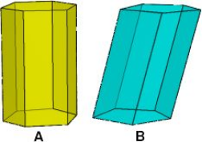

Prisma
O prisma é um sólido geométrico, que faz parte da geometria espacial, caracterizado por ser um poliedro convexo com duas bases (polígonos iguais) congruentes e paralelas, além das faces planas laterais (paralelogramos). Note que, os elementos que compõem o prisma são: base, altura, arestas, vértices e faces laterais.
Assim, as arestas das bases do prisma são os lados das bases do polígono, enquanto que as arestas laterais correspondem aos lados das faces que não pertencem às bases. Ademais, os vértices do prisma são os pontos de encontro das arestas e a altura é calculada pela distância entre os planos das bases.
Classificação dos prismas
Os prismas são classificados em Retos e Oblíquos: Prisma Reto: possui arestas laterais perpendiculares à base. Prisma Oblíquo: possui arestas laterais oblíquas à base.
Bases do prisma

Prisma triangular: é assim chamado porque as suas bases são triângulos.Tem 6 vértices, 9 arestas, 5 faces e duas bases. Prisma quadrangular: tem quadrados nas suas bases. Tem 8 vértices, 12 aresta, 6 faces e duas bases. Prisma pentagonal: suas bases são pentágonos. Tem 10 vértices, 15 arestas, 7 faces e duas bases. Prisma hexagonal: Tem 12 vértices, 18 arestas, 8 faces e duas bases. Prisma octagonal. Tem 16 vértices, 24 arestas, 10 faces e duas bases.
Área do prisma
Área Lateral: para calcular a área lateral do prisma, basta somar as áreas das faces laterais. Assim, a área lateral de um prisma reto, que possui todas as áreas das faces laterais congruentes, utiliza-se a fórmula: AL = n . A Onde: N: número de lados A: face lateral Área Total: para calcular a área total de um prisma, basta somar as áreas das faces laterais e as áreas das bases, a saber: AT=SL+ 2SB Onde: SL: Soma das áreas das faces laterais SB: soma das áreas das bases
Volume do prisma
O volume do prisma é calculado pela seguinte fórmula: V=B.h Onde, B: área da base h: altura